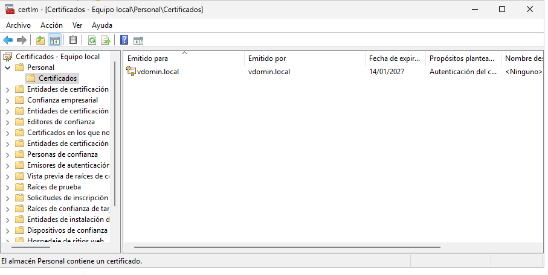
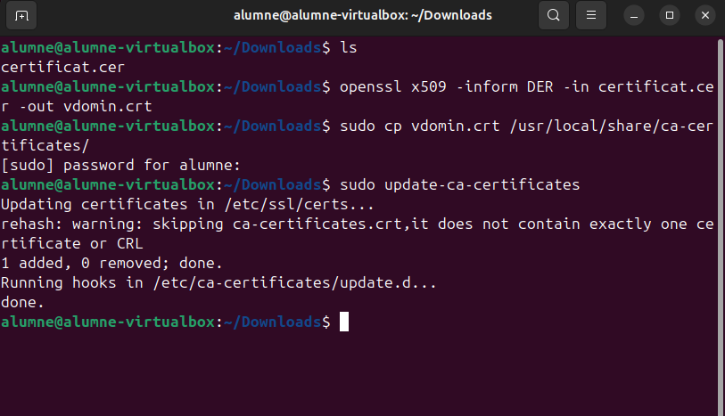
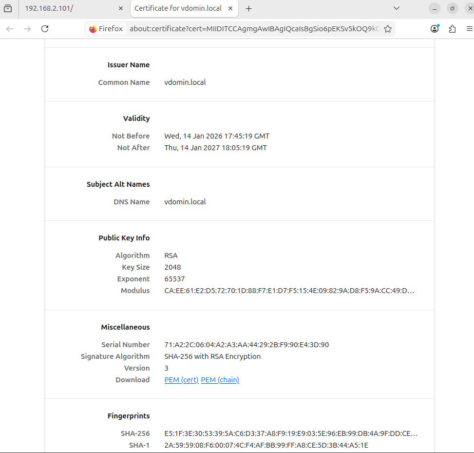
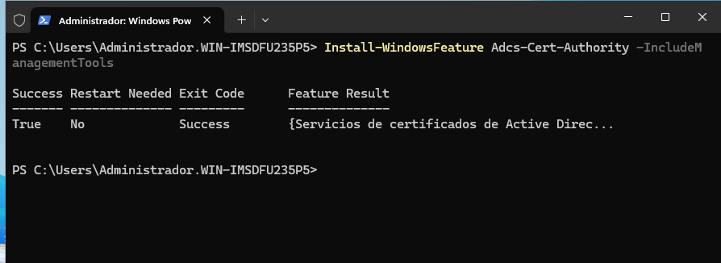
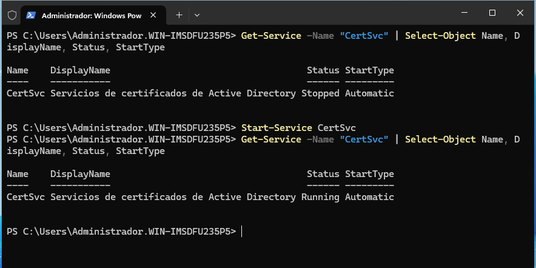
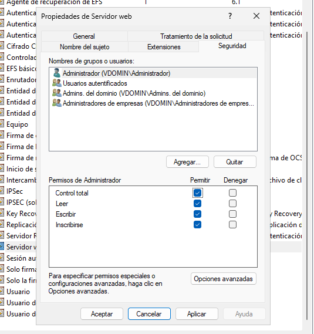
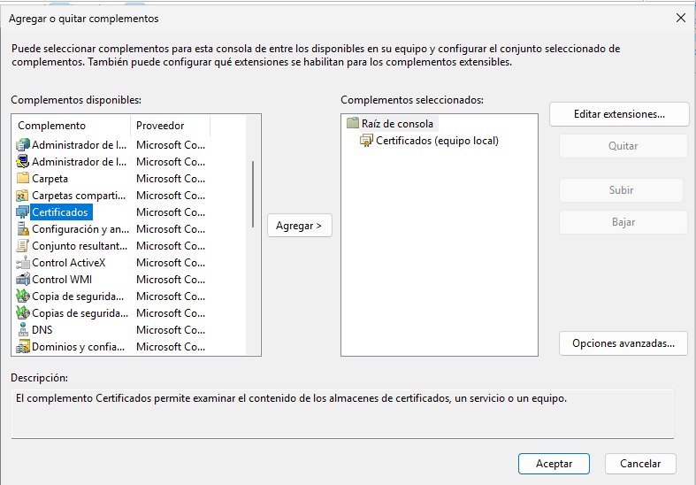
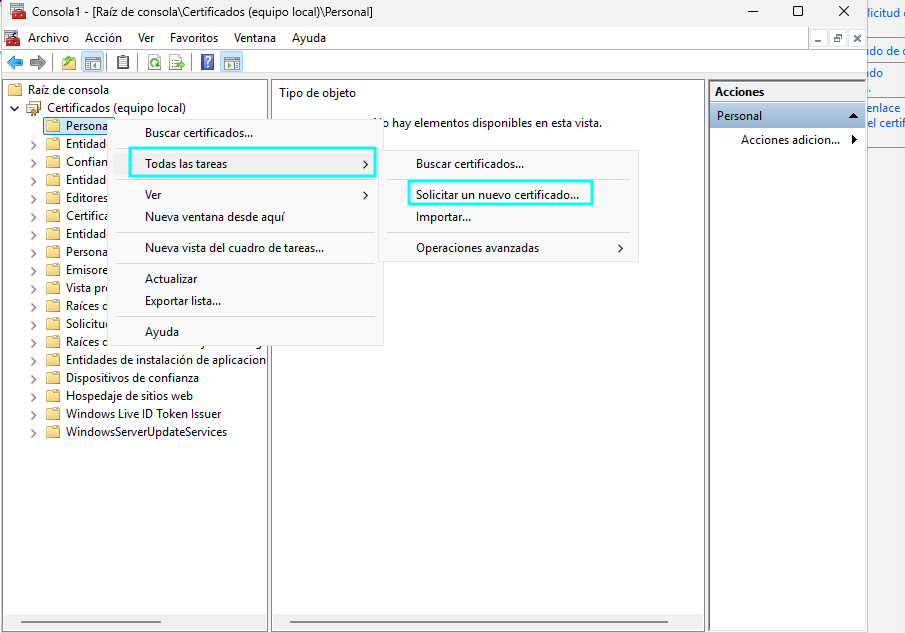
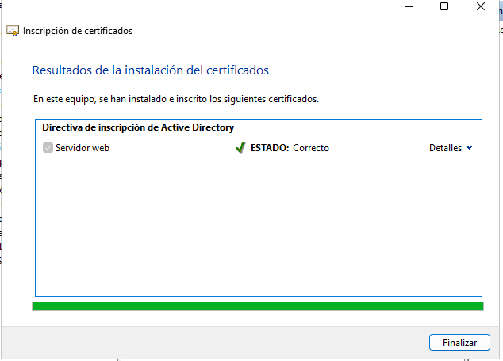
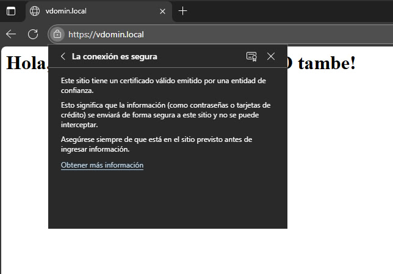

Implementació de certificats HTTPS
L'objectiu d'aquesta part és garantir que la navegació entre el client Ubuntu i el servidor Windows sigui segura mitjançant el protocol HTTPS i xifratge SSL/TLS.
Dues aproximacions
En aquest document s'exploren dues maneres d'implementar HTTPS:
- Certificats auto-signats (Self-Signed) — Ràpids per proves, però requereixen instal·lació manual a cada client.
- Certificats de domini (CA Enterprise) — Solució professional que funciona automàticament a Windows, però requereix configuració manual a Linux.
Part A: Certificats auto-signats (Self-Signed)
Quan utilitzar-los
Els certificats auto-signats són adequats per a entorns de prova o xarxes petites. No són de confiança per defecte, per tant s'han d'instal·lar manualment a cada client.
Per a proves inicials, generem un certificat auto-signat directament des de PowerShell:
$cert = New-SelfSignedCertificate -DnsName "vdomin.local" -CertStoreLocation "cert:\LocalMachine\My"

Importació al magatzem de confiança
Després de generar-lo, l'importem al magatzem d'entitats de confiança (Root store) del servidor per evitar alertes locals:

Podem verificar que el certificat està disponible mitjançant la consola certlm.msc:

Script d'automatització
L'script de PowerShell complet automatitza tant la generació com la vinculació al port 443:

Exportació del certificat
Per poder instal·lar el certificat a altres màquines, l'exportem en format .cer:

Configuració del client Ubuntu (Self-Signed)
Perquè el navegador Firefox a Ubuntu no mostri alertes de seguretat, hem de transferir el certificat del servidor i instal·lar-lo al magatzem de CA de Linux.
Transferència del certificat
Copiem el fitxer .cer a la màquina Ubuntu:

Conversió i instal·lació
Linux requereix format .crt (PEM), per tant convertim el certificat amb OpenSSL i l'instal·lem al sistema:
openssl x509 -inform DER -in certificat.cer -out vdomin.crt
sudo cp vdomin.crt /usr/local/share/ca-certificates/
sudo update-ca-certificates

Verificació a Firefox
Comprovem que el navegador reconeix la identitat del servidor i que el cadenat es mostra tancat (verd):

Comparativa HTTP vs HTTPS
Podem comparar la diferència entre l'accés insegur (HTTP) i el segur (HTTPS):

Part B: Certificats de Domini (CA Enterprise - AD CS)
Avantatge principal
Els certificats emesos per una CA Enterprise (Active Directory Certificate Services) són automàticament de confiança per a tots els clients Windows units al domini. No cal instal·lar res manualment!
Per a entorns de producció, és millor utilitzar una Entitat de Certificació del propi Active Directory en lloc de certificats auto-signats.
Instal·lació del rol AD CS
Instal·lem el rol Active Directory Certificate Services al Windows Server:

Un cop completada la instal·lació, configurem l'autoritat de certificació:

La CA Enterprise queda llesta per emetre certificats de domini:

Gestió de certificats a IIS
Gestionem els certificats emesos a través de l'IIS Manager per vincular-los als llocs web:

Solució de l'error ERR_CERT_COMMON_NAME_INVALID
Problema detectat amb certificats de domini
L'error ERR_CERT_COMMON_NAME_INVALID es produïa perquè l'assistent bàsic de l'IIS no inclou el camp Subject Alternative Name (SAN), obligatori en navegadors moderns (Chrome 58+, Firefox, Edge).
Pas A: Activació del servei de certificats
Primer, hem de verificar que el servei de certificats està actiu. Si el servei CertSvc està aturat, caldrà iniciar-lo:
Get-Service -Name "CertSvc" | Select-Object Name, DisplayName, Status, StartType
Start-Service CertSvc

Pas B: Configuració de permisos a la CA
- Obre la consola Entidad de certificación.
- Ves a
Plantillas de certificado→Administrar. - A la plantilla Servidor web, afegeix l'usuari
AdministradoroEquipos del dominioa la pestanya Seguridad amb permisos de: - ✅ Lectura
- ✅ Inscribirse

Pas C: Sol·licitud del certificat amb SAN (via MMC)
- Obre
mmc.exei afegeix el complement Certificados per a Cuenta de equipo:

- Un cop afegit, veuràs el complement a la llista:

- Navega a
Personal→Certificados, clic dret → Todas las tareas → Solicitar un nuevo certificado:

- Selecciona la plantilla Servidor web i clica a l'enllaç blau de "Se necesita más información para inscribir este certificado":

- A la pestanya Sujeto, configura:
- Nombre de sujeto → Tipo:
Nombre común→ Valor:vdomin.local - Nombre alternativo → Tipo:
DNS→ Valor:vdomin.local

- Clica a Inscribir per completar la sol·licitud:

Verificació a Windows
Un cop aplicat el nou certificat al binding HTTPS de l'IIS, la connexió ja es mostra com a segura automàticament en clients Windows del domini:

Funcionament automàtic a Windows
Amb certificats de domini (CA Enterprise), els clients Windows units al domini confien automàticament en el certificat. No cal instal·lar res manualment!
Configuració de l'IIS per a HTTPS i SSO
Una vegada tenim el certificat correcte, l'hem d'aplicar al lloc web:
- Obre l'Administrador de IIS.
- Selecciona el lloc
vdomin.local→ Enlaces... - Edita l'enllaç
https(port 443) i selecciona el certificat que acabem de crear a la MMC. - Assegura't que l'Autenticación de Windows estigui habilitada i l'Anònima estigui deshabilitada per permetre el SSO.
- Executa
iisresetal PowerShell per aplicar canvis.
iisreset
Integració i SSO en Client Linux
Diferència crítica respecte a Windows
A diferència de Windows, els clients Linux NO hereten automàticament la confiança de la CA del domini. Això significa que:
- El certificat s'ha d'instal·lar manualment al navegador
- El SSO requereix configuració explícita del navegador
- No és un procés "plug and play" com a Windows
Per configurar SSO en un client Linux en un domini Windows:
Pas A: Unió al domini i Kerberos
El client Linux s'ha d'unir al domini (mitjançant sssd o samba-ad-client). Això ja s'ha configurat a la Part 1.
Configura /etc/krb5.conf per definir el REALM i el servidor KDC:
[libdefaults]
default_realm = VDOMIN.LOCAL
dns_lookup_realm = false
dns_lookup_kdc = true
[realms]
VDOMIN.LOCAL = {
kdc = 192.168.2.101
admin_server = 192.168.2.101
}
[domain_realm]
.vdomin.local = VDOMIN.LOCAL
vdomin.local = VDOMIN.LOCAL
Sincronització horària
L'hora del Linux i la del Windows Server han de coincidir (marge < 5 minuts) perquè Kerberos funcioni correctament.
Comprova el tiquet amb:
klist
Pas B: Confiança del Navegador (Manual)
Com que Linux no hereta la confiança de la CA automàticament, cal importar-lo manualment:
- Exporta el certificat de la teva CA des del servidor (format Base64
.CER). - A Brave/Chrome a Linux, ves a:
Configuración→Seguridad→Gestionar certificados→Autoridades- Importa el certificat i marca la casella de "Confiar para identificar sitios web".
Pas C: Activació del SSO al Navegador
El navegador de Linux requereix permís explícit per enviar credencials. Executa el navegador amb la whitelist:
brave-browser --auth-server-whitelist="vdomin.local"
o per Chrome:
google-chrome --auth-server-whitelist="vdomin.local"
Això permet que el navegador lliuri el tiquet de Kerberos de l'usuari loguejat directament a l'IIS.
Requisits obligatoris per SSO a Linux
A Linux, el SSO no és automàtic com a Windows. Sempre requereix:
- Que l'usuari estigui loguejat al sistema amb credencials del domini
- Que tingui un tiquet Kerberos vàlid (
kinito login de sessió) - Que el navegador estigui configurat amb
--auth-server-whitelist - Que el certificat de la CA estigui instal·lat manualment al navegador
Resum comparatiu
| Aspecte | Windows (Domini) | Linux |
|---|---|---|
| Confiança CA | ✅ Automàtica | ❌ Manual |
| Certificat HTTPS | ✅ Automàtic | ❌ Importar manualment |
| SSO Kerberos | ✅ Automàtic | ❌ Configurar navegador |
| Experiència d'usuari | Transparent | Requereix setup inicial |
Amb això, el servidor web IIS està configurat per servir contingut de forma segura mitjançant HTTPS amb certificats de confiança. A Windows el SSO funciona automàticament, però a Linux requereix configuració manual addicional.